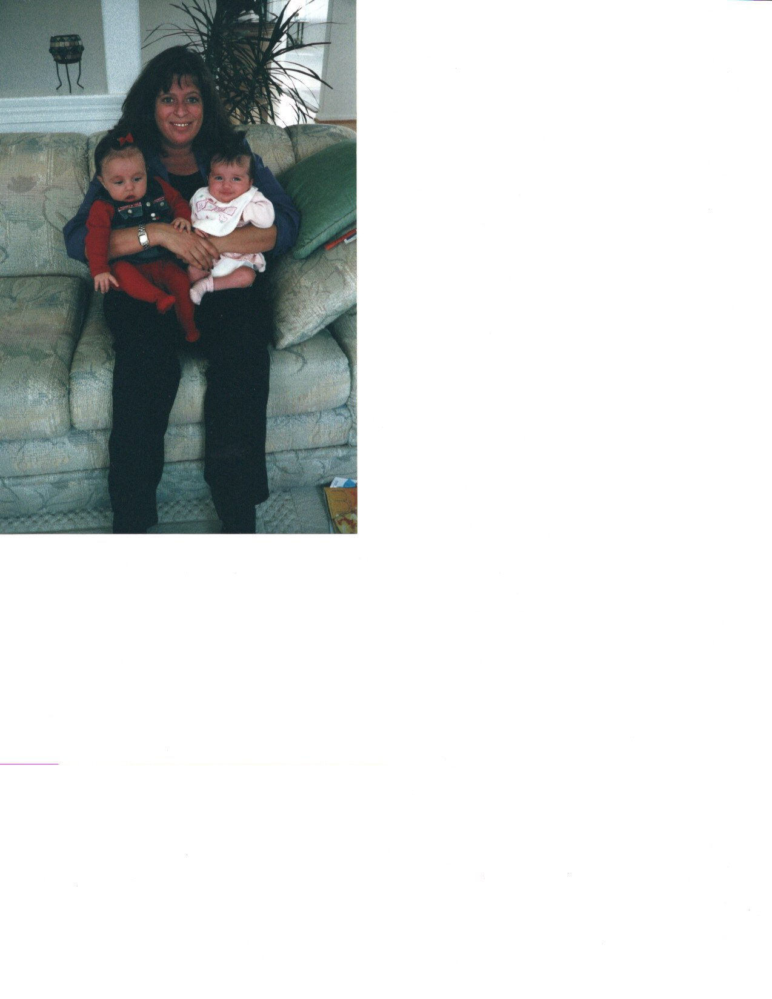

<!DOCTYPE html>
<html>
    <meta charset="utf-8">
    <head>
        <title>Anecdote</title>
    </head>
</html>
<nav>
    <a href="home.html">Home</a>
    <a href="about.html">About</a>
    <a href="anecdote.html">Anecdote</a>
</nav>
<h1>
    Anecdote from Sister, JuliAnn Andolpho-Patti
</h1>

<p>
    “My sister, Cira Patti, was quite a unique person. A few adjectives in which to describe her: personable, boisterous, free-spirited. One of her best qualities was her zest for life. If there was a party, she was there. Monday night football watch party, she was there. Thursday night happy hour at the South Street Seaport, she was there. The shore every weekend in the summertime, yep, she was there. Sometimes I think subliminally she knew she was not going to live a long life as she just lived on the edge. She was un-bothered and un-phased about the woes of daily living. The responsibilities that most adults get stressed over, she was unfazed. It was quite unbelievable, honestly, that she was so at peace with herself as everyone around her would constantly worry and fret over such little things, such nonsense as she would say. Cira would not just go to the party, she was the party.  

    Although Cira was seven years my senior, at times I thought that I was the older sister. When I was just a mere 20 years old, and she was 27 I vividly remember my parents looking at me saying, "Watch your sister" before we went into Manhattan for a night out. I never quite understood why they would say that to me as I was much younger, but as time went on, I realized. My sister lived every breath as if it were her last. I was that annoying               person/sister/friend always making sure we all got home safely, and to work the next day, she was the one doing shots and dancing till 3 am on a work night. My sister lived every day as if there was no tomorrow. She enjoyed life to the fullest and everyone accepted her for that. Anyone you ask, even to this day, will tell you there was no one on this planet like her.                    
</p>
<p>
    Although we were different in so many ways, I appreciated her like no other. She was my big sister, my best friend. She was an unbelievable daughter to my parents, an incredible aunt, sister, and friend. I spoke with my sister every day, multiple times. We'd literally talk about nonsense, complete nonsense. I'd bitch about bills, work, family, husband, and she'd laugh at me. We just chatted as if we did not just chat two hours prior.  September 11th was no different.  I spoke to her before she got on the bus that morning as well as when she got into work that day.  She called me when that first plane went into Tower 1. I picked up the phone frantic as I saw on the TV what was happening, and she was just very calm. "Jule," she said, "I'm not sure what is happening here, I'm afraid.  I'm unsure if I should leave my building.  The Port Authority is telling me to stay in the office."  At which point she held out the phone for me to hear the announcement.  Of course, I was a disaster, "Leave, Ci, Get the hell out of there."  She simply responded, "Let me call you back in two minutes after I talk to so and so and I'll tell you what's happening." At that time, I hung up the phone, turned around and watched that plane go into Tower 2 right underneath her window.                     

I knew I'd never see my sister again.  I packed up my car and one hour later I was on I95 driving north for 18 hours to Manhattan.                     

It was probably the most horrible thing to happen to anyone, let alone your sister.  It took a very long time to come to terms with the fact that she was gone, along with so many of our childhood friends that we both grew up with.  This was so hard on our community. 

I thank God I had Cira in my life.  I think about her often, every day still.  Every time I get stressed with "life" I take a step back.  I think about my sister and say, "Chill out, this is not the end of the world" and move on.  My sister was such a charismatic, unbothered human, and every day I try to be like her. I look up to her more now than I ever did when she was               alive.                     

Tomorrow is not guaranteed. Live life as if you'll be gone tomorrow.” 

-Sister, Julie Patti-Andolpho 
</p>